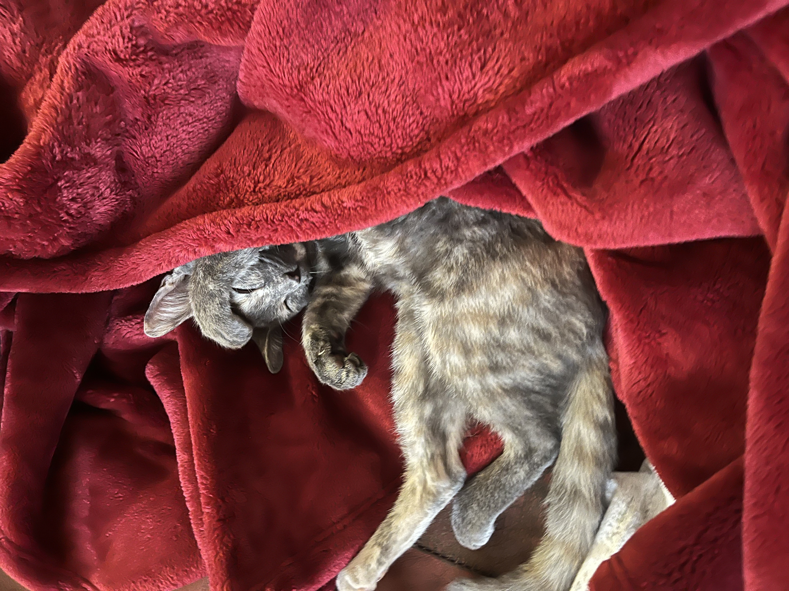

The picture above is my cat cipher. She is a very hyperactive cat and loves to jump on tables and see what we are doing. The way we found her felt very magical, since there was a thunderstorm while we were renovating the house. Since the roof was the part being renovated, the workers did not place enough protection on it, and when it stormed, it rained so hard that the roof fell in, and we had to wake up and add planks do all these emergency repairs while the worker crew \ drove to our house. When they eventually arrived, they had a little cat with them, completely wet, and they said she was found near the gas station, wet and shivering all alone, and they said they might as well keep her or give her to the family that already has a cat. So, from my perspective, I looked on the bright side of the whole situation, and I already knew the rooms where the roof fell in were going to be reworked anyway, so it only sped up the process, and I got a cat out of it, one that happened to only be saved because of the roof falling.